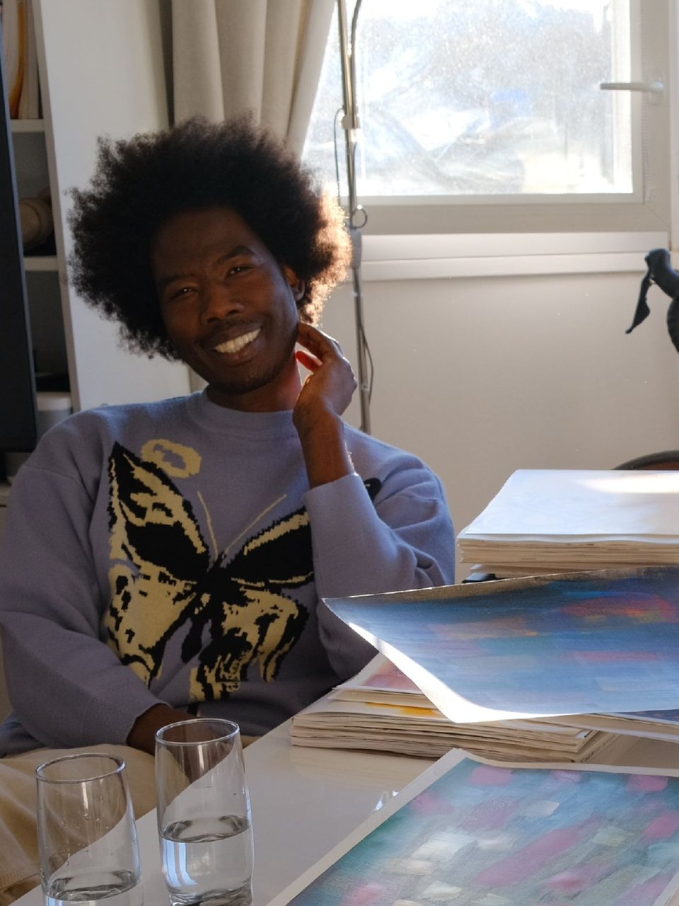

Amer Musa
Artist — Paris
Artiste — Paris
فنان — باريس
Photo: Héloïse Garro
Photo : Héloïse Garro
تصوير: Héloïse Garro
Portfolio available on request → Portfolio disponible sur demande → ملف الأعمال متاح عند الطلب ←I never thought of myself as an artist when I was younger. I grew up in a small village in Sudan, where most of life was about family, land, and survival. We helped in the fields, cared for the animals, and walked long distances to fetch water. Art was not part of my world back then.
In 2014, I left Sudan as a refugee and eventually arrived in Paris in 2017. Those first years in France were some of the hardest of my life. I didn't speak the language, I didn't know the culture, and for a time, I didn't even have a place to sleep. It was during this period of homelessness that I discovered drawing. At first, it was nothing more than a way to fill the emptiness of my days and calm the anxiety in my mind. A piece of paper, a pen, and silence. That was enough.
Drawing quickly became my therapy. It gave me a way to process what I was living through without words. I began experimenting with simple lines, shapes, and colours, almost instinctively. I didn't plan to become an artist; I was simply trying to stay alive, to breathe. But as I kept drawing, I realized that I was finding my own language, made of geometry and repetition.
In 2018, two women, Valérie Larrondo and Nathalie Chemouny, saw photos of my drawings and believed in me. Many doors opened after that. Later came my first solo exhibition in Paris, a collaboration with Paul Smith, and textiles with Hermès and Garro Éditions. It still feels surreal, because only a few years earlier I had been drawing alone on the streets and in public libraries, not thinking anyone would ever see my work.
Today I draw with markers, Stabilo and oil pastels, and paint with acrylic on paper. My work is minimal and geometric, but it is never only about form.
Art saved me, and it still does.
Je n'ai jamais pensé être artiste quand j'étais plus jeune. J'ai grandi dans un petit village du Soudan, où la vie tournait autour de la famille, de la terre et de la survie. Nous travaillions dans les champs, nous nous occupions des animaux et nous marchions de longues distances pour aller chercher de l'eau. L'art ne faisait pas partie de mon univers à cette époque.
En 2014, j'ai quitté le Soudan en tant que réfugié et je suis finalement arrivé à Paris en 2017. Ces premières années en France ont été parmi les plus difficiles de ma vie. Je ne parlais pas la langue, je ne connaissais pas la culture, et pendant un temps je n'avais même pas d'endroit où dormir. C'est durant cette période d'errance que j'ai découvert le dessin. Au début, ce n'était rien de plus qu'un moyen de combler le vide de mes journées et d'apaiser mon anxiété. Une feuille de papier, un stylo et le silence. Cela suffisait.
Très vite, le dessin est devenu ma thérapie. Il m'a permis d'exprimer ce que je vivais sans passer par les mots. J'ai commencé à essayer des lignes, des formes et des couleurs simples, presque par instinct. Je n'avais pas l'intention de devenir artiste ; je cherchais simplement à survivre, à respirer. Mais en continuant, j'ai compris que je trouvais ma propre langue, faite de géométrie et de répétition.
En 2018, deux femmes, Valérie Larrondo et Nathalie Chemouny, ont vu des photos de mes dessins et ont cru en moi. Après cela, beaucoup de portes se sont ouvertes. Puis sont venues ma première exposition personnelle à Paris, une collaboration avec Paul Smith, et des textiles avec Hermès et Garro Éditions. Cela me semble encore irréel, car quelques années plus tôt, je dessinais seul dans la rue et dans les bibliothèques publiques, sans imaginer que quelqu'un verrait un jour mon travail.
Aujourd'hui, je dessine au feutre, au stabilo et au pastel à l'huile, et je peins à l'acrylique sur papier. Mon travail est minimal et géométrique, mais ce n'est jamais seulement une question de forme.
L'art m'a sauvé, et il continue de le faire.
لم أفكر يومًا أنني سأكون فنانًا عندما كنت صغيرًا. نشأت في قرية صغيرة في السودان، حيث كانت الحياة تدور حول العائلة والأرض والبقاء. كنا نساعد في الحقول، ونرعى الحيوانات، ونمشي مسافات طويلة لجلب الماء. لم يكن الفن جزءًا من عالمي في ذلك الوقت.
في عام 2014 غادرت السودان لاجئًا، ووصلت في النهاية إلى باريس عام 2017. كانت تلك السنوات الأولى في فرنسا من أصعب فترات حياتي. لم أكن أتحدث اللغة، ولا أعرف الثقافة، ولفترة من الزمن لم يكن لديّ حتى مكان أنام فيه. خلال فترة التشرد هذه اكتشفت الرسم. في البداية لم يكن سوى وسيلة لملء فراغ الأيام وتهدئة القلق في داخلي. ورقة، وقلم، وصمت. كان ذلك كافيًا.
سرعان ما أصبح الرسم علاجي. منحني طريقةً لأعبّر عمّا أعيشه دون كلمات. بدأت أجرّب خطوطًا وأشكالًا وألوانًا بسيطة، بشكل شبه غريزي. لم أخطط لأن أصبح فنانًا؛ كنت أحاول فقط أن أعيش، أن أتنفس. لكن مع الاستمرار، أدركت أنني أجد لغتي الخاصة، لغة من الهندسة والتكرار.
في عام 2018، رأت امرأتان، Valérie Larrondo وNathalie Chemouny، صورًا لرسوماتي وآمنتا بي. بعد ذلك انفتحت أبواب كثيرة. ثم جاء معرضي الفردي الأول في باريس، وتعاون مع Paul Smith، ومنسوجات مع Hermès وGarro Éditions. ما زال الأمر يبدو لي كالحلم، فقبل سنوات قليلة فقط كنت أرسم وحيدًا في الشوارع وفي المكتبات العامة، دون أن أتخيل أن أحدًا سيرى أعمالي يومًا.
اليوم أرسم بأقلام الفلوماستر والستابيلو والباستيل الزيتي، وأرسم بالأكريليك على الورق. عملي بسيط وهندسي، لكنه ليس مجرد شكل أبدًا.
الفن أنقذني، وما زال ينقذني حتى اليوم.